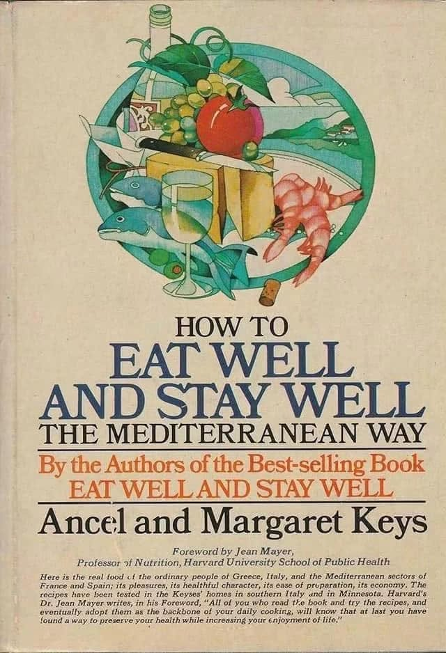

(no text — see the shared post below)
Here is a summary of Ancel Keys 1975 book, How to Eat Well and Stay Well the Mediterranean Way:
facebook.com/share/v/16r4ShyZWd
When you look at the diet that he recommended in this 1975 book, it is really hard to find anything major that he got wrong. This is almost the exact same diet that I eat 50 years later.
The way that he arrived at this diet was very simple. He just copied what people used to eat traditionally in parts of the Mediterranean where life expectancy was really high and heart disease rates were very low.
Core Recommendations from Keys 1975 Book:
- Abundance of Plant-Based Foods:
- Emphasize vegetables, fruits, whole grains, legumes, nuts, and seeds as dietary staples.
- Use fresh, seasonal produce whenever possible.
- Olive Oil as the Primary Fat:
- Use extra virgin olive oil as the main source of fat for cooking and dressings, replacing butter or other fats.
- Moderate Consumption of Dairy:
- Include small amounts of cheese and yogurt, preferably made from sheep or goat's milk.
- Limited Red Meat:
- Consume red meat sparingly and focus on lean cuts.
- Prefer poultry or rabbit over beef or pork.
- Regular Consumption of Fish and Seafood:
- Incorporate fatty fish, such as sardines, anchovies, and mackerel, which are rich in omega-3 fatty acids.
- Legumes as a Protein Source:
- Rely on beans, lentils, and chickpeas as inexpensive and nutrient-dense sources of protein.
- Bread and Grains:
- Choose whole-grain or minimally processed bread, avoiding refined flours.
- Herbs and Spices Over Salt:
- Season food with fresh herbs, garlic, and spices for flavor instead of relying on salt.
- Fresh Fruit for Dessert:
- Replace sugary desserts with fresh or dried fruits.
- Wine in Moderation:
- Enjoy wine, particularly red wine, in moderation and usually with meals. (Typically 1-2 glasses per day, depending on gender and health considerations.)
- Active Lifestyle:
- Combine healthy eating with regular physical activity and a socially connected lifestyle.
Keys lived to 101 following this exact diet, and his wife lived to 98. Out of his research group of 18 scientists who all religiously followed this diet, 3 lived past age 100:
facebook.com/share/v/1ApUyFTvod
Today, this same diet is backed up by 4 large long-running randomized controlled trials, as both a treatment and preventative for heart disease:
↪ Meta-analysis of 4 Mediterranean diet RCTs: MACE down 48%, CVD death down 46%
One of these trials, the Lyon Heart Study, produced the largest reduction in total mortality ever reported in a primary or secondary prevention trial, in the entire history of cardiology. It has beaten all drug trials by a landslide:
↪ Lyon Diet Heart Study: Mediterranean diet cut cardiac events 73% and total deaths 70%
The traditional Mediterranean diet— as originally defined by Keys in this 1975 book— is now the most recommended diet in the world by practicing cardiologists.
#ancelkeysHD #mediterraneanHD #agingHD #longevityHD #centenariansHD #peasantdietHD #bluezonesHD
